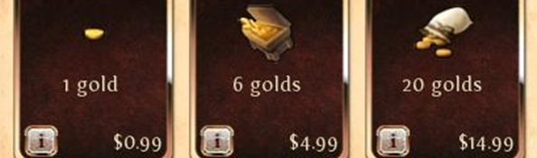
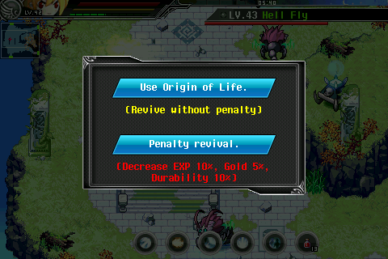

DLCs et achats par micro-paiement
Certains, en lisant ce titre quelque peu opaque, ont pu se demander « Mais de quoi il parle cet article ? ». Avant de m'étendre sur le sujet, je commencerai donc par clarifier ce point. Les DLCs, ou downloadable contents dans la langue de Shakespeare, sont des contenus additionnels téléchargeables pour un jeu qui reprennent le principe de l'extension, à la différence près que l'absence de support physique fait que ces contenus peuvent être gratuits (ou pas) et sont généralement téléchargeables depuis le jeu ou un support fourni avec (Steam, Xbox Live, PSN, etc.).

Derrière le terme barbare d'achats par micro-paiement, se cache l'acquisition de contenu utilisable dans le jeu, comme de l'or, des objets ou un déguisement de bisounours pour votre barbare, bref tout ce qui peut passer par la tête des responsables du projet, par le truchement d'une transaction réelle (comprenez « en balançant l'oseille »).
I. A quoi ça sert ?
Aha ! Je vous vois venir : « Ouais, mais je l'ai payé ce jeu, je vois pas pourquoi je paierai plus maintenant que je l'ai ! ». C'est le point de vue d'un joueur. Maintenant, imaginez que vous créiez un jeu vidéo (si vous trainez sur le site, il est fort possible que l'idée vous ai titillé). Vous avez lancé votre projet amateur et aimeriez mettre un petit pécule de coté pour en réaliser un de plus grande envergure plus tard, ou bien vous avez lancé un projet pro et cherchez un financement qui ne freine pas pour autant la diffusion de votre jeu. Les donations ne suffiront pas nécessairement, et il est possible que vous ayez envie de vous autofinancer. Alors comment faire ? Je vous donne un indice: proposez du contenu payant optionnel au joueur, comme ça ceux qui apprécient votre jeu peuvent vous apporter un support financier et profiter de contenu supplémentaire, tandis que le joueur lambda qui n'a pas envie ou pas les moyens de payer joue quand même à votre jeu. Attendez, c'est pas ce dont on parlait il y a 5 minutes ? Mais si ! Voilà l'utilité de ces contenus payant: permettre au joueur qui apprécie le jeu d'avoir un petit plus, et permettre au studio de toucher de l'argent tout en lançant un jeu essentiellement gratuit.
II. Ah, mais c'est cool en fait
Eh bien, en théorie, on a très envie de dire oui. Malheureusement, ces contenus ne sont pas toujours bien implémentés dans le jeu, et on a parfois l'impression que le jeu est conçu pour pousser à l'achat. Il faut donc trouver un équilibre raisonnable pour mettre le plus grand nombre d'accord.
1. Les pièges des DLCs à éviter
A. Le jeu composé à 90% de DLCs
Il vous est déjà arriver de boucler un jeu en peu de temps pour vous rendre compte que les 90% du jeu étaient composés de DLCs ? C'est un principe qui s'est développé avec le principe des versions d'essai, à la différence que la version d'essai est par définition même un échantillon de test d'un jeu plus vaste. Ce n'est pas un vrai jeu. Un vrai jeu doit fournir une quantité de contenu conséquente, ce qui signifie plus que les DLCs. Bien sûr, au bout de 24 DLCs, le jeu d'origine n'est qu'une petite partie d'un ensemble, mais c'est tout de même la plus importante des parties. C'est d'autant plus vrai si le jeu de base est payant, auquel cas le joueur se sentira floué, et risque de ne pas investir dans vos productions futures. Soyez honnêtes avec le joueur. Le DLCs a pour vocation d'être le carré de chocolat en plus qu'on donne au joueur qui à fini la tablette (comment ça elles sont boiteuses mes métaphores ?). C'est un plus qui vient enrichir l'expérience de base, pas une expérience de base qui vient enrichir plus le studio.
B. Les DLCs radins en contenu
Proposer du contenu additionnel payant au joueur est un droit légitime. Certains seront même heureux de pouvoir prolonger leur expérience contre quelques espèces sonnantes et trébuchantes. Cependant, à partir du moment où le jour paye pour du contenu, il est en mesure d'attendre une certaine qualité de celui-ci, de même qu'une augmentation raisonnable de la durée de vie du jeu. Ainsi, lors de la conception d'un DLC, il est important de prendre en compte la durée de vie ajoutée par le contenu avant de fixer un prix. Dans le cas d'un jeu payant, la durée de vie du DLC devrait être relativement élevée par rapport au prix, dans le mesure ou le joueur a déjà payé pour le jeu, et accepte de payer plus. Un exemple à ne pas suivre est celui de Call of Duty: Black Ops. Sur console HD, le jeu coûte environ 60/70€, ce qui est un prix assez conséquent, et le DLC de 4 cartes multijoueur coute la modique somme de 15€ supplémentaires. Bien sur pour un joueur qui passe ses nuits sur le jeu, cela peut sembler raisonnable, mais pour le joueur lambda, c'est un prix scandaleux. Bilan des courses: les joueurs crient au scandale et ne se sentent pas respectés, ce qui fait que les studios ont mauvaise presse et que certains joueurs refusent de payer lesdits DLCs (qui se vendent tout de même comme des petits pains). L'autre abus est de bâcler la réalisation d'un DLC sous prétexte qu'il s'agit de contenu en plus. Le joueur paye, mais il en veut pour son argent. Le DLC doit donc théoriquement proposer du contenu de qualité supérieure ou égale au reste du jeu. Attention cependant à ne pas faire l'inverse en bâclant le jeu pour peaufiner le contenu payant.
2. Micro-paiement et équilibrage du jeu
A. Mais, non ce n'est pas obligatoire tousse
Les achats internes au jeu sont un contenu optionnel, et le jeu peut tout à fait être joué sans. En tout cas en théorie. Il existe des concepteurs vicieux, qui pour placer leurs petits coup de pouces payants, s'amusent à les rendre quasi indispensables. Vous ne voulez pas acheter de bonus d'expérience pour votre personnage ? Rien ne vous y oblige, après tout, vous pouvez très bien tuer 2000 monstres pour passer au niveau suivant, c'est gratuit. Vous ne trouvez jamais d'argent ou d'objets de valeurs sur les monstres ? C'est dommage que vous ne vouliez pas en acheter ! Dans le même genre, on peut compter les « retournez au dernier de checkpoint, avec moult pénalités si vous n'avez pas acheté d'ankhs (ou le quelconque objet qui vous sert de billet retour une fois envoyé du mauvais coté du Styx) », ou encore les jeux PvP où les joueurs ont tous payé pour acheter des bonus qui les rendent invincibles.

Ce n'est en aucun cas parce que l'achat de contenu peut faciliter le jeu que le gameplay doit être pensé contre le joueur. Idéalement, le jeu devrait être conçu et équilibré AVANT de penser à intégrer du contenu payant, autrement vous frustrerez les joueurs qui ne peuvent/veulent pas payer pour ledit contenu. De plus, si le joueur doit payer constamment pour avancer, il ne jouera pas longtemps et ne rejouera probablement jamais à votre jeu, et vous aurez mauvaise presse.
B. Achète Excalibur+5 et terrasse tout le monde !
L'ajout de contenu payant dans un jeu ne doit pas déséquilibrer le jeu en défaveur du joueur qui ne paie pas, cela a été dit. Mais alors si je vends des armes et des bonus au joueur qui paie, le jeu sera trop facile pour lui ? Eh ben non, pas forcément. Il faut proposer pour cela au joueur du contenu raisonnable. Ainsi, si vous vendez des armes au joueur, ne lui vendez pas des armes surpuissantes. Pensez également aux possibles combinaisons pernicieuses auquel le joueur pourrait penser: si vous proposez en parallèle des armes de haut niveau et des tomes d 'expérience, le joueur qui craque son porte-monnaie traversera votre jeu comme un sabre traverse du fromage blanc. Mais rien ne vous empêche de lui imposer des restriction sur ses achats: pas de tome d'expérience avant d'avoir fini le jeu une fois par exemple.
Pensez aussi que le joueur voudra pouvoir adapter ses achats à ses besoins. Par exemple, le joueur de bas niveau préfèrera surement acheter plusieurs ankhs de base, plutôt qu'une ankh de réincarnation divine +4. Il peut pour cela être préférable de proposer au joueur d'acheter une monnaie spéciale, plutôt que d'acheter directement les objets. Pensez cependant à proposer des objets simples à bas prix pour que le joueur puisse dépenser l'intégralité de son argent: rien de plus frustrant que d'avoir 99 crédits quand le premier prix est à 100 crédits.
III. Quoi !? Je dois vous faire une conclusion !?
1. Récap et morale de l'histoire.
Bon, va pour la conclusion. Les DLCs et autres contenus payants ne sont ni bons ni mauvais de manière objective. Ce sont des éléments du jeu qui deviennent ce que vous choisissez d'en faire et influent sur le jeu en fonction des choix d'implémentation que vous faites. De manière générale, avant de proposer du contenu supplémentaire, finissez le contenu basique, et finalisez le. Le contenu additionnel vient toujours en dernier, un peu comme la cerise sur le gâteau, ou la fiente en plein milieu de la tarte, selon ce que vous en faites. Comme pour tout, et je dis bien TOUT, ce contenu doit être soigneusement dosé, et dispensé avec parcimonie, faute de quoi vous aboutirez à un résultat néfaste pour le joueur, donc pour votre image, donc pour vous (à moins que vous soyez un névrosé aigri désireux de frustrer autant de joueur innocents que possible).
2. Maintenant que les gosses sont couchés, parlons business
Les chiffres de ce paragraphe sont ceux donnés par l'AFJV.
Concrètement, quel place y a-t-il sur le marché pour les DLCs et contenus achetables par micro-paiement ? Un chose est sure, les jeux gratuits, de par leur accessibilité, ont une portée immense et peuvent facilement devenir populaires, pour peu que la qualité soit au rendez-vous. Sur l'ensemble des joueurs de jeux gratuits, la tranche des joueurs payant se situe entre 5 et 10% de la population totale. Les autres joueurs permettent une promotion gratuite et participent à leur façon à la réussite de votre jeu.
Les revenus générés par les jeux gratuits proviennent à 90% de la vente de contenu (objets, bonus, etc.) ou d'unité monétaire et atteignent en moyenne 0,70 à 1,50€ par joueur et par an, mais sont de l'ordre de 20 à 27€ par joueur payant par an. Pour garantir la rentabilité optimale d'un jeu, il est conseillé de mettre à disposition des utilisateurs une multitude de moyens de paiement, et de l'adapter à votre population cible (paiement par SMS, carte prépayée, appel téléphonique pour les mineurs par exemple).
Il faut également garder en tête que les dépenses varient en fonction du type de jeu proposé. Par exemple, dans le cas d'un MMO F2P (Free-to-Play ou MMO gratuit), les dépenses sont émulées par les interactions entre joueurs, que ce soit pour être mieux armé que le voisin, ou pour frimer avec le familier que tout le monde veut.
De plus, les jeux vidéos sur smartphone sont un secteur à part, mais prometteur car adapté aux micro-transactions en permettant des transactions rapides et simple (via un quelconque Application Store généralement) rendant l'accès au contenu simple pour le joueur. Rappelez vous que plus le paiement est complexe à effectuer, moins le joueur sera prêt à mettre la main au port monnaie.
Qui plus est, les jeux gratuits financés par la vente de contenu sont un marché en pleine explosion. Grâce à la gratuité de la majorité du contenu, ces jeux disposent d'une capacité de diffusion largement supérieure au jeux payants. En témoigne l'explosion constatée dans le secteur des MMO F2P, qui peuvent facilement dépasser le million d'abonnés, à tel point que certains jeux anciennement payant ont changé leur modèle économique pour le F2P tout en annonçant une hausse spectaculaire des revenus : Lord of the Ring Online annonce avoir doublé ses revenus et Donjon & Dragons Online avoir multiplié par 5 ses revenus. Le système des micro-paiements apparaît donc comme prometteur et plein d'avenir, grâce à sa souplesse.
Remerciements :
- à Antoine Gersant, pour ses relectures et son aide.
- à Christophe Kopler, pour m'avoir aidé dans mes recherches.
- à Pascal Luban, pour ses articles riches d'enseignements.
Ajouter un commentaire
Commentaires

Bien évidemment, cet article n'a pas pour vocation d'être une analyse de la réalité économique qui entoure les DLC et les micropaiements. Cet article vise plutôt la suggestion d'un compromis acceptable entre l'intérêt du joueur, pouvoir jouer sans mettre la main au portefeuille, et l'intérêt du game designer, qui veut vivre de ce qu'il fait. Il est évident que pour des grosses productions et les marketteux, le but de ce genre de contenu est de faire cracher toujours un peu plus au joueur. Cependant, il ne faut pas non plus diaboliser, certains jeux (je pense à de petites prods) arrivent à trouver un bon équilibre, comme par exemple TinyTower, sur iOS, qui propose d'acheter une monnaie que le joueur obtient de toute manière en jouant, et qui n'est nécessaire que pour acheter certaines amélioration réellement facultatives. Après tout, ce site traite de game design, pas de marketing: il est donc normal qu'on aie tendance à jouer les game designer à cookies.

Ce qui est marrant, c'est que dès que je vois un jeu avec du contenu optionnel il correspond à 90% de ce qu'il ne faut pas faire…
Attention à ne pas trop lancer son discours sous le point de vue du gentil Game Designer qui a mérité son cookie Il ne faut pas oublier que c'est bel et bien pour faire de l'argent, et bien plus qu'en paiement initial simple du jeu comme tu l'indiques. Les marketeux, euh veulent vous faire cracher au bassinet, et aussi souvent que faire se peut. On obtient donc : Boosts 'optionnels' dont d'optionnels ils n'ont que le nom ([Private Joke] comme les poly [/Private Joke]) Accessoires pour Kevin, aussi bien les objets de Kikoolol que les Excalitrucs qui vous ruinent l'équilibre du PvP :/ Chapitre ou Fin de jeu en DlC (navrant exemples de Assassin's Creed 2 pour le chapitre et de Prince Of Persia (le dernier) pour son épilogue payant) la monnaie virtuelle que vous achetez par 'paquets'
Comme tu l'évoques dans cette partie :
Pensez cependant à proposer des objets simples à bas prix pour que le joueur puisse dépenser l'intégralité de son argent: rien de plus frustrant que d'avoir 99 crédits quand le premier prix est à 100 crédits.
Mais du point de vue marketeux, le but est de pousser à la sur-enchère de consommation :
Je viens de m'acheter 20 pièce d'or, je vais pouvoir m'acheter le Sandwisch-au-thon-redondant… comment ça il coûte 25 pièce d'or… bon bah je reprend 20 pièces d'or, comme ça je prend en plus les chaussettes-du-trollolol, comment ça 21 pièces d'or… bon bah je reprend etc.